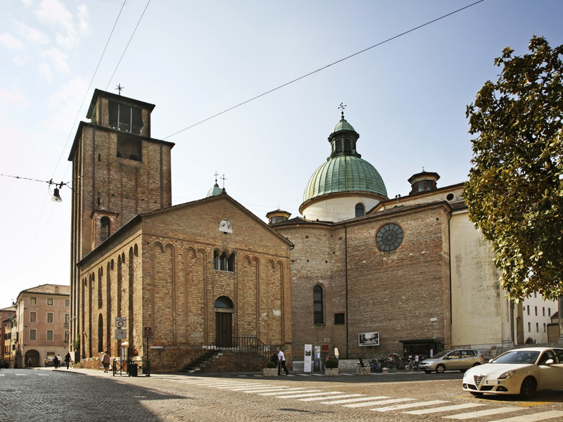

Il battistero di San Giovanni fu ricostruito nei secoli XI-XII sulla base di altri edifici antichi, e per
secoli
fu l'unico battistero della città. La chiesa è cambiata nel tempo ed è stata riportata alle sue originarie
linee
romaniche nel corso di questo secolo. Costruita in rosso mattone, sulla facciata, i lati e l'abside (visibili
da
Calmaggiore) sono incrociati in raffinato senso plastico da lesene dolcemente raccordate da coppie di archi al
centro dei mensoloni scolpiti. Due architravi romani con motivi botanici (XI o IV secolo d.C.) fiancheggiano
il
portone d'ingresso, che conserva gli originali battenti in legno intagliato del XIV secolo. Sulla destra, la
vivace cattedrale è una nicchia con affreschi tardo gotici (S. Giovanni Battista, S. Giacomo e l'Angelo) di un
pittore molto vicino a Gentile da Fabriano. L'interno, a semplice aula rettangolare, presenta un piccolo con
abside sullo sfondo, racchiuso da balaustre di colonne marmoree e vigorose teste di Santi. Ai lati del
presbiterio due absidi con interessanti affreschi duecenteschi: quella di destra una Madonna col Bambino e
Santi, in stile romanico; quella di sinistra è una Madonna col Bambino tra Gabriele e San Prosdocimo, un'opera
con linee ancora in bei colori e un disegno elegante. Al centro della stanza si trovano i grandi battesimi in
marmo rosso.
